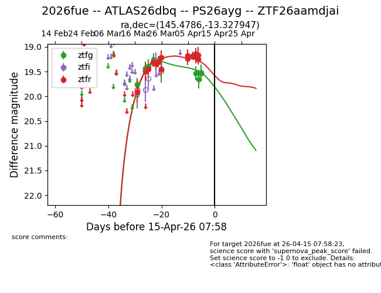
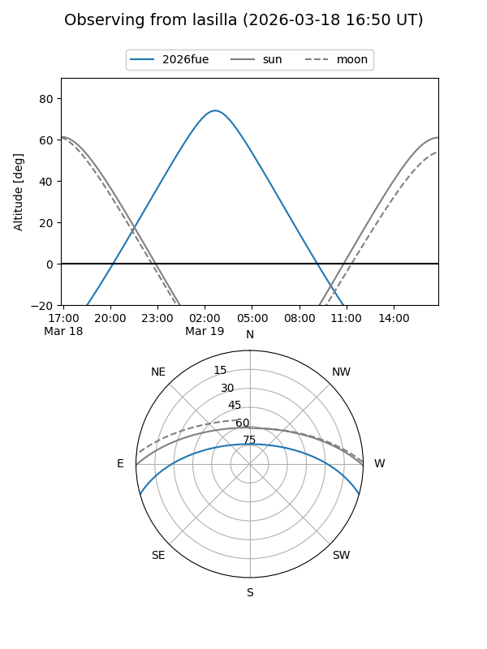
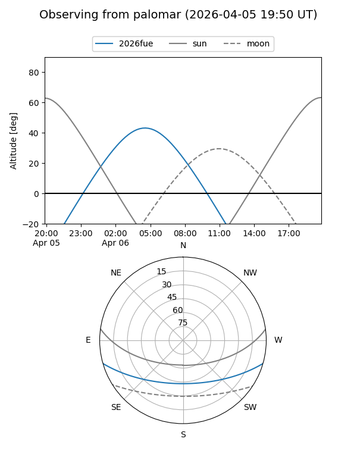
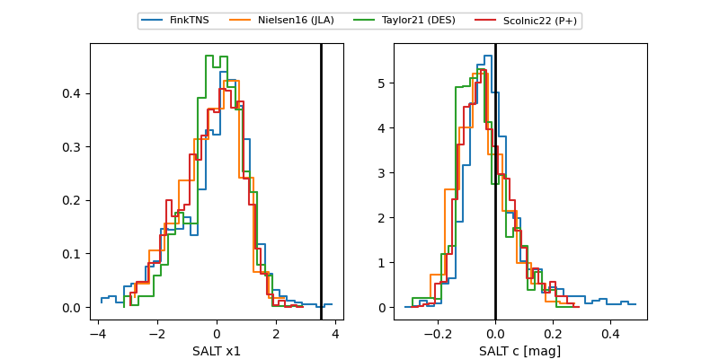

2026fue
Target 2026fue at 2026-04-15 08:05
Aliases and brokers:
FINK: link
Lasair: link
ALeRCE: link
TNS: link
YSE: link
alt names
ZTF26aamdjai (ztf,fink_ztf)
2026fue (tns,yse)
ATLAS26dbq (atlas)
PS26ayg (panstarrs)
Coordinates:
equatorial (ra, dec) = 145.4786,-13.32795
equatorial (HMS+DMS) = 09:41:54.87,-13:19:40.61
galactic (l, b) = (248.1579,+28.76930)
Flags:
Photometry:
last ztfg=19.52, ztfr=19.25
9 ztfg, 15 ztfr detections
Lightcurve

Visibility


Additional plots
